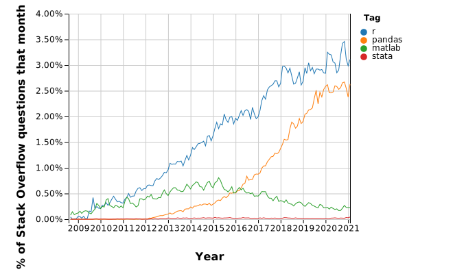
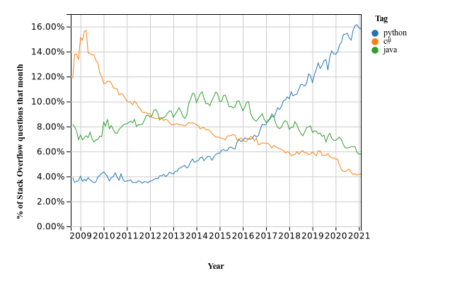
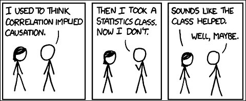

<!doctype html>
<html lang="en">

	<head>
		<meta charset="utf-8">

		<title>reveal.js - Class 1</title>

		<link rel="stylesheet" href="plugin/reveal.css">
		<link rel="stylesheet" href="plugin/black2.css" id="theme">
        <link rel="stylesheet" href="plugin/monokai.css">
        <link rel="stylesheet" href="plugin/title-footer.css">
       
	</head>

	<body>

		<div class="reveal">

			<div class="slides">


                <!-- Slides are separated by three dashes (quick 'n dirty regular expression) -->
                <section data-markdown data-separator="\n---\n" data-separator-vertical="^\n--\n$">
                    <script type="text/template">
                        <!-- .slide: style="text-align: left;" -->
                        ## Empirical Macroeconomics
                        ### Francesco Franco - Nova SBE
                        #### T4 2023 
                        ---

                        <!-- .slide: style="text-align: left;" -->
                        ### Housekeeping
                        #### Classes and Evaluation
                        
                        - Requires background in Macroeconomics and Econometrics
                        - Python
                        - Evaluation: 50% home-works, 50% final

                        ---

                        <!-- .slide: style="text-align: left;" -->
                        #### Looking forward: what statistical packages?
                        
                        <center></center> 

                        ---

                        <!-- .slide: style="text-align: left;" -->
                        #### Looking forward: what language?
                        
                        <center></center> 

                        ---

                        <!-- .slide: style="text-align: left;" -->
                        #### Looking forward: coding?
                        
                        [coding at JP Morgan](https://www.ft.com/content/4c17d6ce-c8b2-11e8-ba8f-ee390057b8c9) 

                        ---

                        <!-- .slide: style="text-align: left;" -->
                        
                        ### Applied Macroeconomics
                        #### Broad methodological tool

                        <center></center> 

                        -   Cutting edge time series techniques

                        -   Useful both for finance and macroeconomics

                        -   Forecast will be useful for ML techniques

                        ---

                        <!-- .slide: style="text-align: left;" -->

                        ### Empirical Macroeconomics Program

                        #### Method: reproduce classic papers

                        -   I cover the paper in class

                        -   Homework: Theory and reproduction

                        -   3 papers on the identification of shocks

                        ---

                        <!-- .slide: style="text-align: left;" -->

                        ### 1.SVAR
                        #### First paper: Fundamental Shocks

                        -   Blanchard and Quah (1989): The Dynamic Effects of Aggregate Demand
                            and Supply Disturbances

                        -   Classic reference for the identification of structural shocks using
                            Structural Vector Autoregression models

                        -   Agnostic approach: broad identification assumption consistent across
                            many models

                        -   Homework requires you to apply the technique to a different country
                            than the US


                        ---

                        <!-- .slide: style="text-align: left;" -->

                        ### 2.FAVAR-DFM

                        #### Second paper: Non-Fundamental Shocks

                        -   Bernanke, Ben, Jean Boivin, and Piotr Eliasz. 2005 "Measuring the
                            Effects of Monetary Policy: A Factor-Augmented Vector Autoregressive
                            (FAVAR) Approach."

                        -   One of the first paper that applied FAVAR to macro

                        -   Increase the information you can use to identify the shocks,
                            possibly solving non fundamentalness issues maintaining the agnostic
                            approach of SVAR

                        -   Bridge between big data and SVAR

                        -   Homework requires you to extend code to reproduce figures and tables
                            in the paper

                        ---

                        <!-- .slide: style="text-align: left;" -->

                        ### 3.DSGE

                        #### Third paper: Non-Recoverable Shocks

                        -   Blanchard, Olivier J., Jean-Paul L'Huillier and Guido Lorenzoni.
                            2013. News, Noise, and Fluctuations: An Empirical Exploration.

                        -   Agnostic approach might not always work: sometimes there is the need
                            for an economic structure

                        -   This is relevant if you are interested in shocks that are not fully
                            observed by the economic agents

                        -   Homework requires you to extend code to reproduce figures and tables
                            in the paper
                        ---

                        <!-- .slide: style="text-align: left;" -->

                        ### A brief history

                        #### The Probability Approach in Econometrics SIMS Nobel lecture

                        In this first replication (warm up for Python) we "reproduce" Chris
                        Sims Nobel Lecture on the historical evolution of Econometrics :

                        1.  1930's-1940's : Tinbergen-Haavelmo project

                        2.  1950's-1970's: Keynesian large macro-econometric models versus
                            single equations Monetarist model

                        3.  1970's-1980's: Rational Expectations

                        4.  1980's-2000's: VAR and SVAR

                        5.  2000's-today:

                            1.  Evolution on SVAR

                            2.  DSGE
                        
                        ---

                        <!-- .slide: style="text-align: left;" -->

                        ### A brief history

                        #### The Probability Approach in Econometrics

                        -   Tinbergen: multiple equations with error terms, discuss

                        -   Critique by Keynes: model with errors can always fit, discuss

                        -   Haveelmo
                            [Haavelmo1943](http://www.jstor.org/stable/pdf/1905714.pdf). If
                            errors have probability structure then we estimate parameters
                            building likelihood of the model. Haavelmo set up an example:
                            $$C_{t}  =\beta+\alpha Y_{t}+\epsilon_{t}$$
                            
                            $$I_{t}  =\theta\left(C_{t}-C_{t-1}\right)+\eta_{t}$$ 
                            
                            $$Y_{t}  =C_{t}+I_{t}$$

                        ---

                        <!-- .slide: style="text-align: left;" -->

                        ### A brief history

                        #### Haavelmo example

                        Substitute for $Y_{t}$ (identity) 
                        
                        <span>
                            \[\begin{aligned}
                            C_{t}\left(1-\alpha\right)-\alpha I_{t} & =\beta+\epsilon_{t}\\
                            -\theta C_{t}+I_{t} & =-\theta C_{t-1}+\eta_{t}
                            \end{aligned} \]
                        <span>
                        
                        and write it into a system 
                        
                        <span>
                            \[\begin{aligned}  
                            \begin{bmatrix}1-\alpha & -\alpha\\
                              -\theta & 1
                               \end{bmatrix}\begin{bmatrix}C_{t}\\
                                I_{t}
                            \end{bmatrix}=\begin{bmatrix}\beta\\
                            0
                            \end{bmatrix}+\begin{bmatrix}0 & 0\\
                            -\theta & 0
                            \end{bmatrix}\begin{bmatrix}C_{t-1}\\
                            I_{t-1}
                            \end{bmatrix}+\begin{bmatrix}\epsilon_{t}\\
                            \eta_{t}
                            \end{bmatrix}
                            \end{aligned} \]
                        <span>
                        
                        $$\Gamma_{0}X_{t}=C+\Gamma_{1}X_{t-1}+U_{t}$$ where
                        $U_{t}\sim N\left(0,D\right)$ and assume further: 1) that $U_{t}$ is
                        independent of $U_{\tau}$ for $t\neq\tau$ and 2) that $U_{t}$ is
                        independent of $X_{\tau}$ for all $t$ and $\tau$.

                        ---

                        <!-- .slide: style="text-align: left;" -->

                        ### A brief history

                        #### The likelihood in a dynamic setting 

                        The starting point is to have the joint probability distribution of
                        $f_{X^{T}}(X^{T};\psi)$ where $X^{T}=X_{T},X_{T-1},..,X_{0}$ is the entire
                        sample , $\psi$ are the parameters, and $f_{X^{T}}$ is as the likelihood to be
                        maximized.

                        In dynamic settings the marginalization of the joint probability
                        distribution of the data is essential to overcome the time
                        interdependence between the observations.

                        Start by the distribution of the first observation to be
                        $f_{X_{0}}(X_{0};\psi)$ (in a stationary environment think of the
                        unconditional distribution) then consider writing the joint distribution
                        of the first and second observation as the production of the conditional
                        distribution and the marginal distribution: $$\begin{aligned}
                        f_{X_{1}}(X_{1},X_{0};\psi) & =f_{X_{1}|X_{0}}\left(X_{1}|X_{0};\psi\right)f_{X_{0}}(X_{0};\psi)\end{aligned}$$

                        ---

                        <!-- .slide: style="text-align: left;" -->

                        ### A brief history

                        #### The likelihood in a dynamic setting 

                        from distribution and the marginal distribution: $$\begin{aligned}
                        f_{X_{1}}(X_{1},X_{0};\psi) & =f_{X_{1}|X_{0}}\left(X_{1}|X_{0};\psi\right)f_{X_{0}}(X_{0};\psi)\end{aligned}$$
                        you can do that for the whole sample and get
                        $$f_{X^{T}}(X^{T};\psi)=f_{X_{0}}(X_{0};\psi)\prod_{t=1}^{T}f_{X_{t}|X_{t-1}}\left(X_{t}|X_{t-1};\psi\right)$$
                        or in logs
                        $$L(\psi)=log\left(f_{X_{0}}(X_{0};\psi)\right)+\sum_{t=1}^{T}log\left(f_{X_{t}|X_{t-1}}\left(X_{t}|X_{t-1};\psi\right)\right)$$

                        ---

                       <!-- .slide: style="text-align: left;" -->

                        ### A brief history

                        #### Back to Haavelmo

                        Obtain the reduced form by inverting $\Gamma_{0}$ (must be invertible to
                        get back the structural representation of the model) and obtain the reduced form:
                        $$X_{t}=\Gamma_{0}^{-1}C+\Gamma_{0}^{-1}\Gamma_{1}X_{t-1}+\Gamma_{0}^{-1}U_{t}$$
                        $$X_{t}=A+BX_{t-1}+V_{t}$$ where $V_{t}\sim N\left(0,\Omega\right)$, and

                        <span>
                            \[\begin{aligned} 
                            f(X_{t}|X_{t-1}) & =N\left(A+BX_{t-1},\Omega\right)\\
                             & =N\left(\Gamma_{0}^{-1}C+\Gamma_{0}^{-1}\Gamma_{1}X_{t-1},\Gamma_{0}^{-1}D\left(\Gamma_{0}^{-1}\right)'\right)
                             \end{aligned} \]
                        <span>


                        ---

                        <!-- .slide: style="text-align: left;" -->

                        ### A brief history

                        #### The likelihood in Haavelmo model

                        The Log-likehood of the reduced form is 
                        
                        <span>
                            \[\begin{aligned}  
                            \mathcal{L}(\psi_{r}) & =-Tn/2+T/2log\left|\Omega^{-1}\right|\\
                            & -0.5\sum_{t=1}^{T}\left[\left(X_{t}-A-BX_{t-1}\right)'\Omega^{-1}\left(X_{t}-A-BX_{t-1}\right)\right]
                            \end{aligned} \]
                        <span>
                        
                        which you can write in terms of the structural model as

                        <span>
                            \[\begin{aligned}  
                            \mathcal{L}(\psi) & =-\left(Tn/2\right)+\left(T/2\right)log\left|\Gamma_{0}\right|^{2}-\left(T/2\right)log\left|D\right|\\
                            & -0.5\sum_{t=1}^{T}\left[\left(\Gamma_{0}X_{t}-C-\Gamma_{1}X_{t-1}\right)'D^{-1}\left(\Gamma_{0}X_{t}-C-\Gamma_{1}X_{t-1}\right)\right]
                            \end{aligned} \]
                        <span>

                        and find the parameters by maximizing it (can use the reduced form if
                        exactly identified, order and rank condition)

                        ---

                        <!-- .slide: style="text-align: left;" -->

                        ### A brief history

                        #### The Cowles Commission

                        This approach was extended and developed by the Cowles Commission and
                        resulted into large Macroeconometrics models of hundreds of equations.
                        But there were issues as the size of the models implied hundreds of
                        parameters which forced to impose many restrictions and exclusions (in
                        the Haavelmo example $I_{t-1}$ is excluded together with higher order
                        lags) both on the equations and the covariance matrix:

                        -   starting from a tight structural form and then obtaining the reduce
                            form could result in a bad probability model for the joint
                            distribution of the sample

                        -   variables that only appear on the RHS (call them $Z_{t})$ imply that
                            they must be exogenous (again different definitions) to be able to
                            learn the parameters of interests : $f_{X^{T}}(X^{T};\psi)$

                        ---

                        <!-- .slide: style="text-align: left;" -->

                        ### A brief history

                        #### The Monetarist approach: an example of endogeneity

                        -   Friedman and Meiselman (1963) used single-equation regressions to
                            argue that the relation between money and income was more stable
                            than that between what they called "autonomous expenditure" and
                            income. They thought that money was exogenous.

                        -   Simultaneously other economists were estimating single equations
                            explaining money with income and interest rates. (Sims 1972, Mehra
                            1978). Someone was wrong, or both?

                        ---

                        <!-- .slide: style="text-align: left;" -->

                        ### A brief history

                        #### Rational Expectations: cross equation restrictions

                        -   required that models that included explicit expectations of the
                            future in behavioral equations should base those expectations on the
                            full model's own dynamic structure which created a new comprehension
                            of causality (asset prices)

                        -   policy behavior was required to accurately model expectations in the
                            private sector

                        -   Maximum likelihood estimation of complete systems embodying rational
                            expectations at the scale needed for policy modeling was not
                            possible

                        ---

                        <!-- .slide: style="text-align: left;" -->

                        ### A brief history

                        #### Granger-Causality-Rational Expectations, Money and Income

                        According to efficient market hypothesis (with constant real interest
                        rate) the price of a stock must respect:
                        $$\left(1+r\right)P_{t}=E_{t}\left[P_{t+1}+D_{t+1}\right]$$ where $D$
                        is the dividend. The arbitrage and a boundness condition imply:
                        $$P_{t}=\sum_{j=1}^{\infty}E_{t}\left(\frac{1}{1+r}\right)^{j}D_{t+j}.$$
                        Which says that the price incorporates the market's best forecast of the
                        Present Value of dividends.

                        ---

                        <!-- .slide: style="text-align: left;" -->

                        ### A brief history

                        #### Granger-Causality-Rational Expectations

                        Suppose $$D_{t}=d+u_{t}+\delta u_{t-1}+v_{t}$$ and you observe $u_{t}$.
                        Then
                        
                        <span>
                            \[\begin{aligned}
                            E_{t}\left[D_{t+j}\right]=\begin{cases}
                            d+\delta u_{t} & for\ j=1\\
                            d & for\ j=2,3...
                            \end{cases}
                            \end{aligned} \]
                        <span> 
                        
                        ---

                        <!-- .slide: style="text-align: left;" -->

                        ### A brief history

                        #### Granger-Causality-Rational Expectations
                        
                        This implies
                        $$P_{t}=\frac{d}{r}+\frac{\delta u_{t}}{1+r}$$ and lagging and
                        rearranging
                        $\delta u_{t-1}=\left(1+r\right)P_{t-1}-\left(1+r\right)\frac{d}{r}$
                        which allows to rewrite the dividend
                        $$D_{t}=d+u_{t}+\left(1+r\right)P_{t-1}-\left(1+r\right)\frac{d}{r}+v_{t}.$$
                        where Prices Granger Cause dividends.

                        ---

                        <!-- .slide: style="text-align: left;" -->

                        ### A brief history

                        #### VAR-SVAR: smaller models little restrictions

                        In 1980 Sims writes "Macroeconomics and Reality" were he estimates a VAR
                        and a SVAR. VAR's are models of the joint behavior of a set of time
                        series with restrictions or prior distributions that, at least
                        initially, are symmetric in the variables. The advantage is that the
                        probability distribution is now well behaved. Once estimated It is
                        possible to introduce theory explicitly, but with restraint, so that
                        VAR's became usable for policy analysis. Blanchard and Watson (1986) and
                        Sims (1986) showed two different approaches to doing this.

                        ---

                        <!-- .slide: style="text-align: left;" -->

                        ### A brief history

                        #### Today

                        Since SVAR's limit themselves to isolate for example monetary policy,
                        treating the rest of the economy as a single "black box" system, they
                        can not easily provide conditional forecasts. Low commodity prices due
                        to supply disruptions, high or low productivity growth, decline in the
                        value of the dollar, fiscal policy changes.

                        -   data reduction models nested with SVAR, FAVAR, Global SVAR, DFM

                        -   Back to structural models but with microfoundations : DSGE

                        -   Bayesian methods imported from physics (MCMC) to permit feasible
                            estimates (implications)

                        ---

                        <!-- .slide: style="text-align: left;" -->

                        ### Back to Haavelmo

                        #### From Structural Model to VAR to SVAR

                        If you go back to Haavelmo  and to improve the likelihood find that $U_{t}=F_{1}U_{t-1}+V_{t}$ where $V_{t}$ are white noise: 

                        <span>
                            \[\begin{aligned}
                            \Gamma_{0}X_{t} &=C+\Gamma_{1}X_{t-1}+U_{t}\\
                            \left(I-F_{1}L\right)\Gamma_{0}X_{t} &=\left(I-F_{1}L\right)C+\left(I-F_{1}L\right)\Gamma_{1}X_{t-1}+V_{t}\\
                            \Gamma_{0}X_{t} &=F\Gamma_{0}X_{t-1}+\left(I-F\right)C+\Gamma_{1}X_{t-1}-F\Gamma_{1}X_{t-2}+V_{t}\\
                            \Gamma_{0}X_{t} &=\left(I-F\right)C+\left[F\Gamma_{0}+\Gamma_{1}\right]X_{t-1}-F\Gamma_{1}X_{t-2}+V_{t}\\
                            X_{t} &=\Gamma_{0}^{-1}\left(I-F\right)C+\Gamma_{0}^{-1}\left[F\Gamma_{0}+\Gamma_{1}\right]X_{t-1}-\Gamma_{0}^{-1}F\Gamma_{1}X_{t-2}+\Gamma_{0}^{-1}V_{t}\\
                            X_{t}&=A+B_{1}X_{t-1}+B_{2}X_{t-2}+E_{t}
                            \end{aligned} \]
                        <span> 

                        ---

                        <!-- .slide: style="text-align: left;" -->

                        ### From Structural Model to VAR to SVAR

                        So assuming $U_{t}$ is parametrized sufficiently richly that $V_{t}$ is white noise then a VAR can be viewed as 
                        the reduced form a dynamic structural model. To some extent Haavelmo was well ahead. The identification of the SVAR from the VAR 
                        occurs on the $\Gamma_{0}$ through the covariance matrix of the reduced form residuals:
                        
                        $$\Gamma_{0}^{-1}V_{t}V_{t}'\left(\Gamma_{0}^{-1}\right)'=E_{t}E_{t}'$$

                        ---

                        <!-- .slide: style="text-align: left;" -->

                        ### From Structural Model to VAR to SVAR

                        The assumption that the restrictions are only on $\Gamma_{0}$, namely not on the coefficients of the lagged variables,
                        the $\Gamma_{1}$ in Haavelmo example, permits to perform FIML estimation by OLS regression of the LHS on the RHS variables
                        and solve the previous set of non linear equations to find  $\Gamma_{0}$. (if a unique solution exists)
                        This is the approach we will study in the first paper.  


                    </script>
                </section>

            </div>
		</div>

		<script src="plugin/reveal.js"></script>
        <script src="plugin/markdown.js"></script>
        <script src="plugin/highlight.js"></script>
        <script src="plugin/notes.js"></script>
        <script src="plugin/plugin.js"></script>
        <script src="plugin/math.js"></script>
        <script src="plugin/plugin.js"></script>
        <script src="plugin/menu.js"></script>
        <script src="plugin/pdfexport.js"></script>
		<script>

			Reveal.initialize({
				controls: true,
				progress: true,
				history: true,
                center: true,
                touch: true,
                dependencies:
                [
                    { src: 'plugin/title-footer.js', async: true, callback: function() { title_footer.initialize(); } }
                ],
                math: {
                    mathjax: 'https://cdn.jsdelivr.net/gh/mathjax/mathjax@2.7.8/MathJax.js',
                    config: 'TeX-AMS_HTML-full',
                    // pass other options into `MathJax.Hub.Config()`
                    TeX: { Macros: { RR: "{\\bf R}" } }
                    },
        
                chalkboard: {
                    boardmarkerWidth: 3,
                    chalkWidth: 2.5,
                    chalkEffect: 1.0,
                    src: null,
                    readOnly: undefined,
                    toggleChalkboardButton: { left: "90px", bottom: "30px", top: "auto", right: "auto" },
                    toggleNotesButton: { left: "60px", bottom: "30px", top: "auto", right: "auto" },
                    transition: 800,
                    theme: "chalkboard",
                    background: [ 'rgba(127,127,127,.1)' , path + 'img/blackboard.png' ],
                    grid: { color: 'rgb(50,50,10,0.5)', distance: 80, width: 2},
                    eraser: { src: path + 'img/sponge.png', radius: 20},
                    boardmarkers : [
                            { color: 'rgba(100,100,100,1)', cursor: 'url(' + path + 'img/boardmarker-black.png), auto'},
                            { color: 'rgba(30,144,255, 1)', cursor: 'url(' + path + 'img/boardmarker-blue.png), auto'},
                            { color: 'rgba(220,20,60,1)', cursor: 'url(' + path + 'img/boardmarker-red.png), auto'},
                            { color: 'rgba(50,205,50,1)', cursor: 'url(' + path + 'img/boardmarker-green.png), auto'},
                            { color: 'rgba(255,140,0,1)', cursor: 'url(' + path + 'img/boardmarker-orange.png), auto'},
                            { color: 'rgba(150,0,20150,1)', cursor: 'url(' + path + 'img/boardmarker-purple.png), auto'},
                            { color: 'rgba(255,220,0,1)', cursor: 'url(' + path + 'img/boardmarker-yellow.png), auto'}
                    ],
                    chalks: [
                            { color: 'rgba(255,255,255,0.5)', cursor: 'url(' + path + 'img/chalk-white.png), auto'},
                            { color: 'rgba(96, 154, 244, 0.5)', cursor: 'url(' + path + 'img/chalk-blue.png), auto'},
                            { color: 'rgba(237, 20, 28, 0.5)', cursor: 'url(' + path + 'img/chalk-red.png), auto'},
                            { color: 'rgba(20, 237, 28, 0.5)', cursor: 'url(' + path + 'img/chalk-green.png), auto'},
                            { color: 'rgba(220, 133, 41, 0.5)', cursor: 'url(' + path + 'img/chalk-orange.png), auto'},
                            { color: 'rgba(220,0,220,0.5)', cursor: 'url(' + path + 'img/chalk-purple.png), auto'},
                            { color: 'rgba(255,220,0,0.5)', cursor: 'url(' + path + 'img/chalk-yellow.png), auto'}
                    ]
                },
                

				plugins: [ RevealMarkdown, RevealHighlight, RevealNotes,RevealMath, RevealMenu, RevealChalkboard, PdfExport]
			});

		</script>

	</body>
</html>
